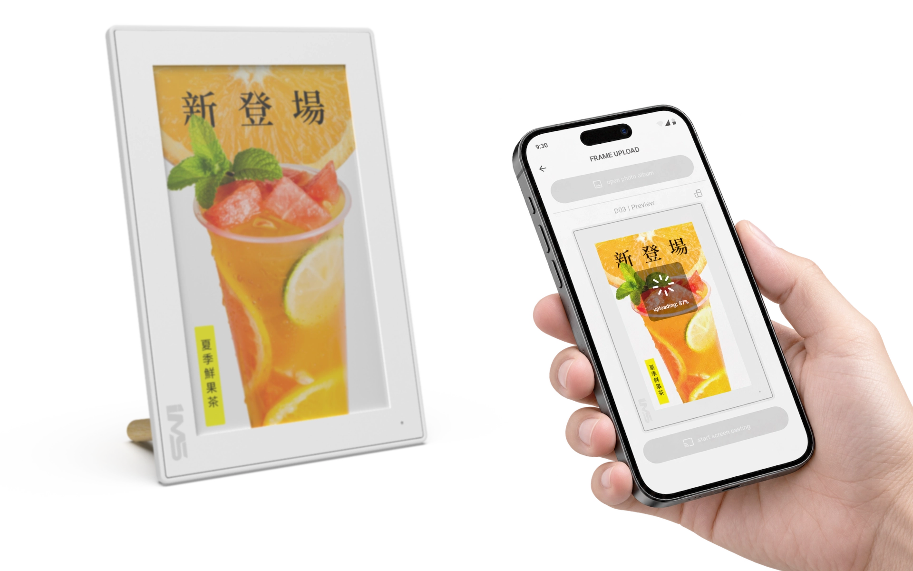
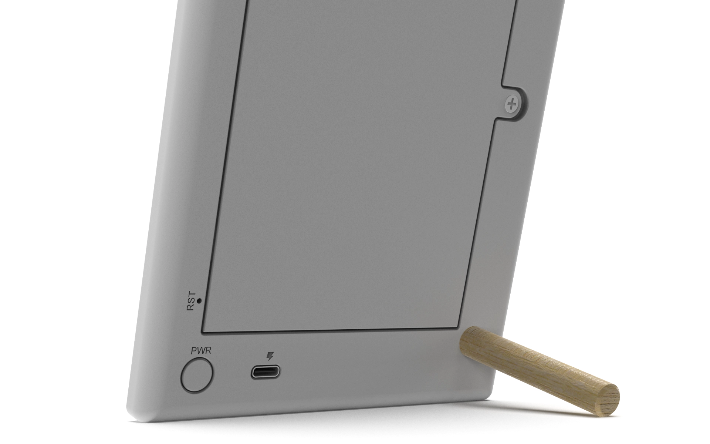
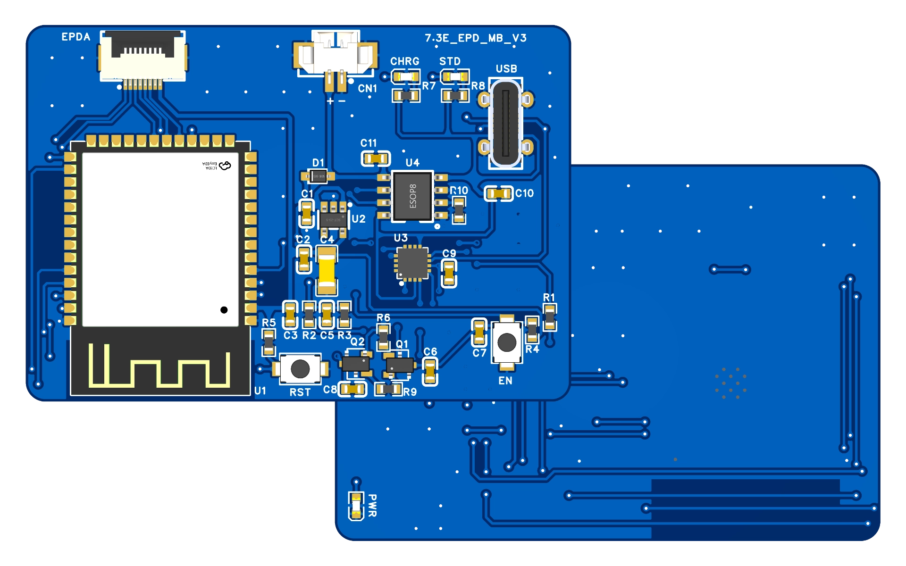

彩色電子紙桌面立牌
手機更新資訊，減少換紙。
餐廳與咖啡店的促銷菜單需要頻繁印製與換紙，插電螢幕又受限於桌面走線。本案選用彩色電子紙，斷電後仍保留畫面，搭配充電電池與背面按鍵喚醒；使用者可在手機上傳圖更新內容，閒置時進入低功耗狀態，也方便依不同時段替換促銷資訊，讓桌面展示更容易維護，適合放在桌邊長時間展示。
驗證 7.3 吋全彩電子紙在免插電桌面情境下，兼顧「極低待機功耗」與「手機近端極速更換菜單」的產品可行性與商業體驗平衡點。
歷時 6 週完成全案自研：從電路原理圖、PCB 布局、ESP32-S3 韌體、Android 配網傳圖 App 到 1:1 機構外觀打樣與實機組裝。
捨棄高成本 4G/LTE 方案，改採 BLE 廣播配網 + Wi-Fi 突發直連傳圖；閒置 2 分鐘由硬體切斷周邊電源並進入 ESP32 Deep Sleep，兼顧連線體驗與整機 BOM 成本。
實機完成全功能閉環，單次充電支援 3 個月以上常態展示。成功交付商業展示樣機，提供實體餐廳評估無紙化菜單升級依據。
RTC 計時與實體中斷喚醒，保障免走線長續航。
Wi-Fi 本地 Socket 直傳 800×480 7 色壓縮封包。
單次充電支援每日換圖 3 次以上之商業運作週期。

01 / ARCHITECTURE
手機更新，按鍵喚醒
因立牌無輸入介面，以 BLE 設定 Wi-Fi，再以 Wi-Fi 傳圖。
手機以 BLE 搜尋立牌並設定 Wi-Fi，完成首次連網。
按下背面按鍵喚醒立牌，連網後即可更新桌面的展示內容。
閒置 2 分鐘後自動深眠，電子紙在斷電後仍保留畫面。
7.3 吋全彩電子紙經壓縮後資料量約 120KB，純 BLE 傳輸需時 15 秒以上，除了用戶等待過久，射頻晶片長時間運作反而嚴重損耗電池；改採 Wi-Fi 短暫突發傳輸（Burst Transmission），在 3 秒內完成傳輸並立即觸發硬體斷電休眠，大幅收斂待機總能耗。

02 / IMPLEMENTATION
電路與機構，一起配置
整合連線、顯示與操作需求，配置電路及機構。
ESP32-S3 整合 BLE 配網、Wi-Fi 傳圖與深眠控制。
天線在產品邊緣，LED 位於 PCB 另一面供正面狀態提示。
依 FPC 出線與電池厚度，安排主板及支架位置。

03 / OUTCOME
可更新的桌面展示產品
完成可由手機更新展示內容的餐廳桌面促銷立牌展示機。整合電路、韌體、Android App 與機構，並提供背面按鍵喚醒及閒置深眠功能。